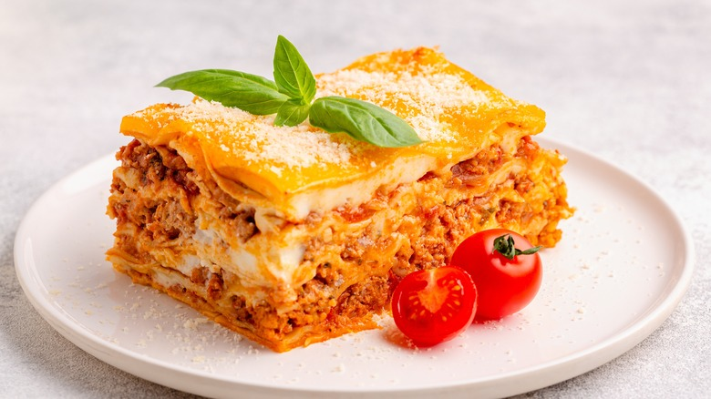

How to do Lasagna?

Lasagna is a classic Italian dish that consists of layers of pasta,
meat sauce, and cheese.
Here's a simple recipe to make delicious lasagna at home.
Ingredients:
- 2 cups of tomatoes sauces
- 12 lasagna pasta sheets
- 500 g ground beef
- 1 chopped onion
- 2 minced garlic cloves
- 400 g tomato sauce
- 400 ml bechamel sauce
- 300 g shredded mozzarella cheese
- Parmesan cheese to taste
- Oil, salt, and pepper
Preparation:
- Preheat the oven to 180 °C (350 °F).
- Sauté the onion and garlic with oil in a pan. Add the ground beef and cook until browned. Season with salt and pepper to taste. Stir in the tomato sauce and cook for 10 minutes.
- Soak the pasta sheets in hot water if they are not oven-ready.
- Spread a little meat sauce at the bottom of a baking dish.
- Place a layer of pasta sheets.
- Cover with meat sauce, bechamel, and mozzarella cheese.
- Repeat the layers until the dish is full.
- Top with a final layer of pasta, bechamel, mozzarella, and parmesan.
- Bake for 25 to 30 minutes until the cheese is golden and bubbly.
- Rest for 5 minutes before slicing and serving.